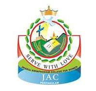
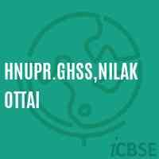

UCE BIT Campus, Anna University Trichy
MCA (2023 - 2025)
- 📚 Acquired comprehensive knowledge in advanced computing topics.
- 💻 Developed practical skills in programming and software development.
- 🎓 Enhanced understanding of emerging technologies and their applications.
- 🔧 Gained hands-on experience through various projects and internships.

Jayaraj Annapackiyam College For Women's
BSc Mathematics (2020 - 2023)
- 🔢 Built a strong foundation in mathematical theories and applications.
- 📊 Gained experience in statistical analysis and problem-solving.
- 🧮 Applied mathematical models to real-world problems and projects.
- 🧪 Engaged in research projects involving complex mathematical computations.

H.N.U.P.R Girls Higher Secondary School
High School (2017 - 2020)
- 📚 Developed essential academic skills across various subjects.
- 🎓 Participated in extracurricular activities and leadership roles.
- 🗣️ Improved communication and teamwork abilities through school projects.
- 🏆 Achieved recognition in academic and extracurricular achievements.